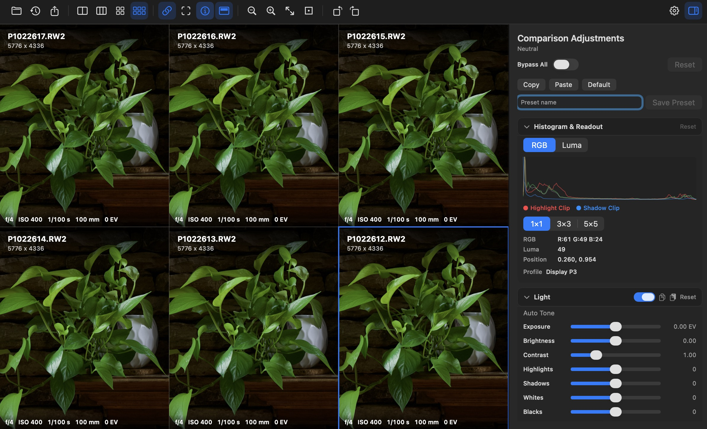

Built for comparison
Not a catalog or editor — RawComp exists to answer one question: how do these images differ? Multi-pane layouts keep context in one window.
A focused macOS comparison tool for photographers and retouchers. Line up RAW files, exports, edits, and crops in 2–6 panes, sync movement, amplify subtle shifts with shared adjustments, and export your verdict.

Not a catalog or editor — RawComp exists to answer one question: how do these images differ? Multi-pane layouts keep context in one window.
Link zoom and pan across every pane, or work freehand. Mark a synchronized highlight region to draw eyes to matching detail.
Push exposure, tone, color, and compare modes equally across panes so differences stay honest while shadows, edges, and noise pop.
Features
From opening a folder of exports to saving a .rawcomp session — inspection, amplification, and export in one native app.
Choose how many images to compare in a single window without juggling separate viewers.
Open JPEG, PNG, HEIC, TIFF, and dozens of camera RAW extensions via macOS decoders.
Free or synced pan/zoom/rotate with fit-to-window and 100% zoom for pixel-level review.
Clipping overlay, edge map, false color, noise emphasis, absolute difference, Delta E, blink, and wipe.
Light, tone curve, color mixer, B&W, presence, noise, optics, and geometry — applied to all panes.
Per-pane histogram, clipping indicators, cursor pixel values, and file metadata.
Save .rawcomp sessions with layout restoration; export the grid as PNG or TIFF from the current viewport.
English, Chinese, Japanese, Korean, and more — switch anytime in the app.
Adjustments preview on top of originals — your files on disk stay untouched.
Compare modes
Some differences hide in shadows, micro-contrast, compression, or noise. RawComp's modes and shared sliders make them visible without favoring one pane.
Supported formats
RawComp recognizes common camera RAW extensions plus standard web and print formats. Decoding follows what macOS and Quick Look can provide on your machine.
Full extension list in the raw-comp README →
Quick start
Clone the repo and run with Swift Package Manager or Xcode.
git clone https://github.com/franklioxygen/raw-comp.git
cd raw-comp
swift run RawCompOpen images, pick a layout, toggle synced panes, and use the inspector to amplify differences.
Technology
Swift 6 · SwiftUI · AppKit bridges · SPM
Comparison-first — not a DAM, not a destructive RAW editor
Open source on GitHub. Download a release or build from source on your Mac.